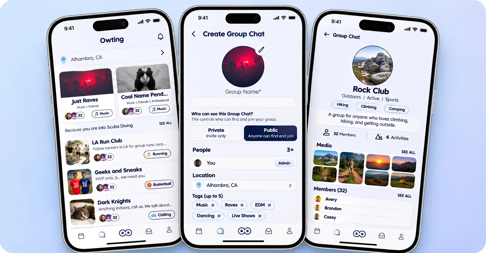

Find the right people
Help users find relevant, active communities.
Designing a social hub for interest-based communities
Owting is a social platform for discovering local communities and real-world activities. I designed the Group Chats experience to help people discover relevant groups, create their own, and manage community details and membership through a connected mobile experience.

The design challenge was to help people discover groups that fit their interests, understand how to join, and create their own communities with clear controls.
Help users find relevant, active communities.
Make creating a community intuitive.
Support sharing, organization, and membership.
I reviewed the existing flows, focused the scope on group discovery, creation, and management, and explored how the screens could work together as a coherent experience.
THE SOLUTION
From discovering a community to creating and managing one, each flow gives people a clear next step.
Interest-driven group cards surface activities, location, and social context so people can evaluate a group before joining.
Group setup brings together a name, privacy level, location, activities, and tags to establish identity and joining expectations.
Group profiles bring details, media, members, requests, and sharing controls into one place.
Define visibility and joining expectations during group setup.
Make communities easier to understand and discover.
Bring details, media, members, and activities together.